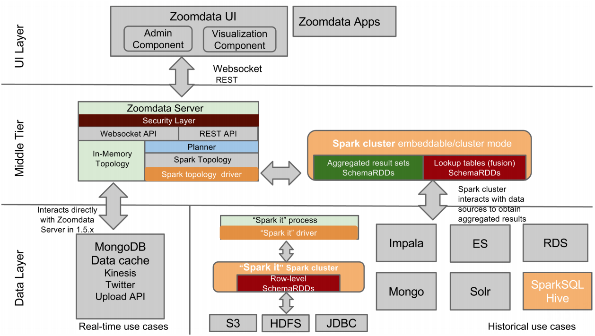
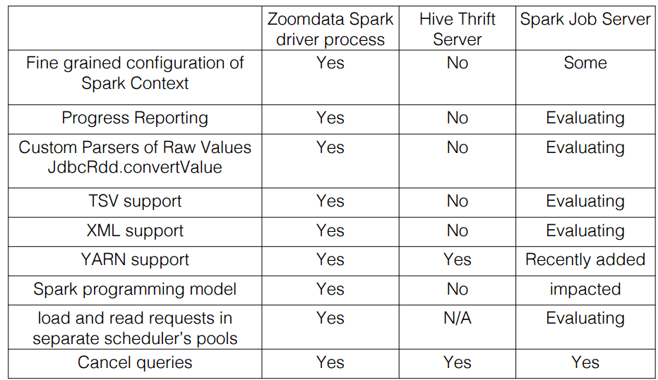
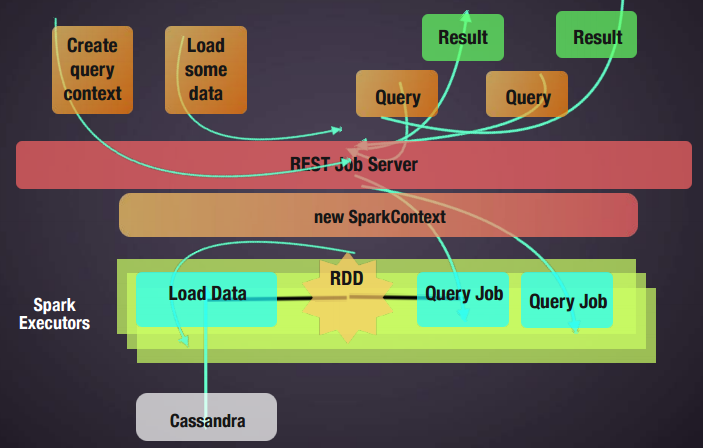

Mars的笔记

Spark Job Server
Zoomdata


Spark Job Server

- "Spark as a Service": Simple REST interface for all aspects of job, context management
- Support for Spark SQL Contexts/jobs and custom job contexts, Works for Spark Streaming as well!
- Supports sub-second low-latency jobs via long-running job contexts
- Start and stop job contexts for RDD sharing and low-latency jobs; change resources on restart
- Kill running jobs via stop context
- Separate jar uploading step for faster job startup
- Asynchronous and synchronous job API. Synchronous API is great for low latency jobs!
- Works with Standalone Spark as well as Mesos and yarn-client
- Job and jar info is persisted via a pluggable DAO interface
- Named RDDs to cache and retrieve RDDs by name, improving RDD sharing and reuse among jobs.
- Jars, job history and config are persisted via a pluggable API
- Async and sync API, JSON job results
Example
object WordCountExample extends SparkJob {
override def validate(sc: SparkContext, config: Config): SparkJobValidation = {
Try(config.getString(“input.string”))
.map(x => SparkJobValid)
.getOrElse(SparkJobInvalid(“No input.string”))
}
override def runJob(sc: SparkContext, config: Config): Any = {
val dd = sc.parallelize(config.getString(“input.string”).split(" ").toSeq)
dd.map((_, 1)).reduceByKey(_ + _).collect().toMap
}
}Spark Kernel (IBM)

HiveThriftServer
Spark-Admin
- provides administrators and developers a GUI to provision and manage Spark clusters easily
- github
二进制兼容问题
- Reading from HDFS
- Spark driver’s hadoop libraries need to match those on the spark cluster
- We made these libraries configurable by:
- Decoupling the spark driver into a separate process
- Allowing administrators to configure what libraries through a UI
- Kicking off a spark driver process with the configured hadoop libraries